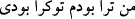

yapılması, sudan yukarda olması; yumuşaklık ile sertlik arası orta bir kıvamda
bulunması tıpkı döşenmiş bir yaygı gibi üzerinde oturmaya ve uyumaya elverişli bir
şekilde döşenmiş bulunmasındandır. Arz’ın döşek olabilmesi için uzunluğu ve genişliği
olan gerçek bir yüzey olması zarûreti yoktur. Çünkü arz, küre biçiminde olmasına
rağmen büyüklüğünden dolayı, döşenmiş sayılır.
Allah Teâlâ, gökyüzünü üzerinize konmuş bir kubbe gibi yapmıştır. Her semâ, kubbe
gibi, tabaka tabaka bir diğerinin üzerine bitişiktir. Dünyâ semâsının kenarları yeryüzüne
bitişiktir. Tefsîru Ebi’l-Leys’te böyle yazılıdır.
Allah Teâlâ, semâdan bulutlara, bulutlardan da yeryüzüne su indirerek bununla size
rızık olmak üzere, çeşitli meyveler, sebzeler ve ağaçlar bitirmiştir. Allah, suya kuvve-i
fâiliye (etkenlik), yeryüzüne de kuvve-i münfailiyye (edilgenlik) yerleştirmiştir. Bu
ikisinin birleşmesiyle çeşitli bitki sınıfları ortaya çıkmıştır. Suyun gökten yere inip
onunla yeryüzünden bitkilerin çıkması, nikâh yoluyla birleşen eşlerin, aralarında
tedâhül ettikleri su sâyesinde çocuk nimeti ile rızıklanmalarına benzer.
İşte Allah, kendisinin yegâne yaratıcı ve biricik rızık verici olduğunu bilesiniz diye
size bunca rızık ve nimet vermiştir. O halde bunları bilip dururken sakın Allah’a ortak
koşmayın! Yâni Allah’a ibâdet eder gibi, eş koştuğunuz şeylere ibâdet etmeyin!
“Allah’ın onunla birlikte ibâdet edilen, ortakları var” demeyin!
İbn Abbas (r.a.)’dan şöyle dediği rivâyet edilmiştir: “Falan kimse olmasaydı benim
başıma şöyle bir belâ gelirdi. Şâyed kapımızda havlayan şu köpek olmasaydı, malımız
çalınırdı, şeklinde konuşmayınız!
Rasûlullah (s.a.) şöyle buyurmuştur: “Sizi, şâyed şöyle olsaydı, böyle olurdu” gibi
sözler söylemekten sakındırırım. Çünkü “Lev” (şâyed), münâfıkların sözüdür. Onlar
savaşıp ölen kardeşleri için: “Eğer bizim yanımızda kalsalardı ölmezler,
öldürülmezlerdi.”[215] derler.
Sa’dî (k.s.) der ki:
İster izzet, mevkî ve makam, isterse zillet ve kölelik olsun,
Ben bunların hepsini Hakk’tan bilirim, Amr ve Zeyd’den değil.
Siz biliyorsunuz ki, sizi, sizden öncekileri, göğü, yeri ve bütün rızıkları; hiçbir fayda
ve zarar vermeye güçleri yetmeyen putlar değil, her şeye gücü yeten Allah yaratmıştır.
Bu âyetten alınacak öğüt şudur: Kıyâmet günü Allah Teâlâ: “Ben sizin için şunları
şunları yaptım. Peki siz, benim için ne yaptınız?” diye sorarsa ne cevap vereceksiniz?
Rivâyete göre Şiblî (k.s.) bir gün halka va’z etti. Kıyâmetten ve kıyâmetin dehşetinden
bahsetti. İnsanları ağlattı. O esnâda yanlarına Ebu’l-Hüseyin Nûrî geldi ve: “İnsanları
bu kadar korkutma! Çünkü o günün hesâbı iki kelimeden ibârettir. Bu kadar uzun
değildir. O iki kelime şudur: “
= men tü-râ bûdem tû ki râ bûdî” “Ben
seninle idim, sen kiminle idin?” dedi.
İbâdette esas olan, ağyârın mülâhazasını gönülden çıkararak ihlâsa sarılmaktır. Yâni
ibâdeti ancak ve ancak Allah için yapmaktır. Bu da her şeyin yaratıcısını müşâhede ile